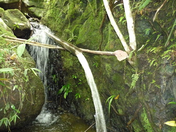

tulalug 
/tulalug/
1.
n.
(scab,bamboo,metal or plastic) pipe (for water)
Lukè te sahing ka tulalug diyè te sakeruwan ney.
Scab of a banana which we used as water pipe.
Eng. water pipe; pipe; tube; spouting; guttering
Tag. tubo
Ceb. tubo
OCM: Water Supply (312), Miscellaneous Hardware (414)
Online dict status: -
Usage level: R
2.
v.
for the water (egtulalug, migtulalug/intulalug, eg><ø-) (for a liquid) to flow at something else (egtulaluhan, intulaluhan/migtulaluhan/pigtulaluhan, location, eg><an-) e.g., scab or pipe (igtulalug, intulalug, instrument, ig><ø-)
Egtulalug e ka weyig te tulalug ku ne lukè te sahing.
The water flow to a banana scab which I've made.
cf. tihis
cf. tali-tì
Eng. flow from or through pipe; convey liquid
OCM: Miscellaneous Hardware (414)
DDP: Flow (1.3.2.1)
Online dict status: -
Usage level: R
v.
for someone (egtutulalug, migtutulalug/intutulalug, agent, eg><ø-rdpCV-) to build a pipe for the water to flow somewhere (egtulaluhan, intulaluhan/migtulaluhan/pigtulaluhan, location, eg><an-)
Egtulaluhan te pad ka egpanihusan ta.
We will make a pipe of our swimming place.
Hendiyè ki te intulaluhan ta ganna.
We will go to the place we've put a pipe.
Eng. pipe, make to; convey liquid
Online dict status: -
Usage level: M
n.
(tulaluhan, -an) a flow (with banana scab or pipe spring)
Eng. flow (with banana scab or pipe spring)
DDP: Flow (1.3.2.1)
Online dict status: -
Usage level: R
v.
(intulaluhan, iN–an) a place where the water flows over an overhang
DDP: Flow (1.3.2.1)
Online dict status: -
Usage level: R
Updated by: RJH,AAA,TME,QDL,NJK,QDL
Last updated: 06/Feb/2010
This page last updated: 19/May/2012
Copyright © 2009-2010, Matigsalug Language Christian Association, Inc